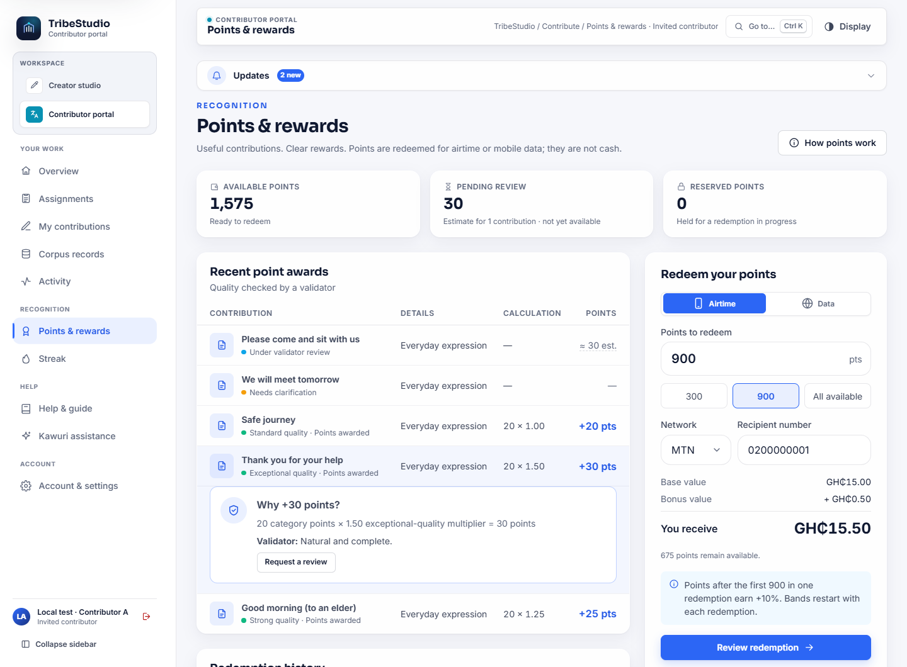
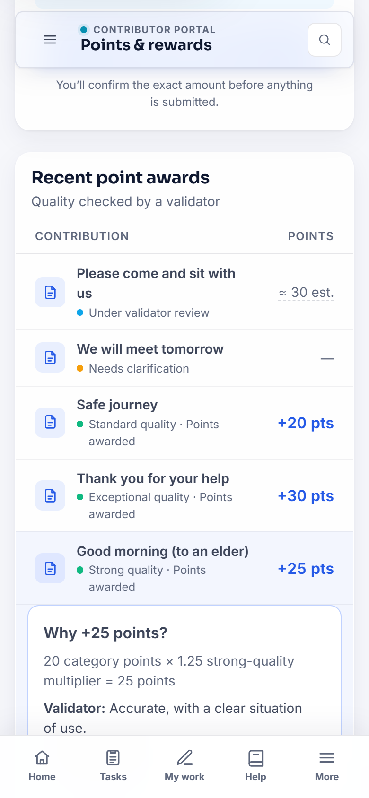
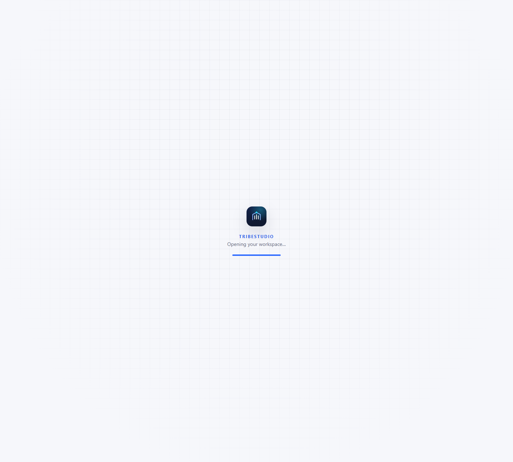
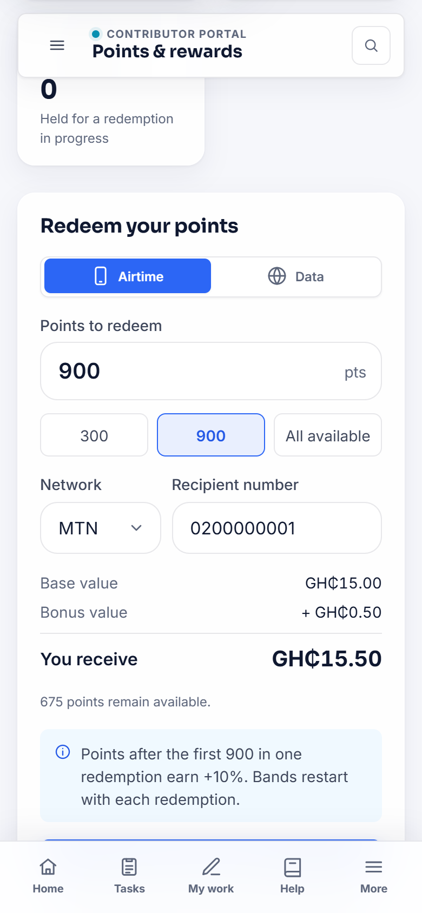
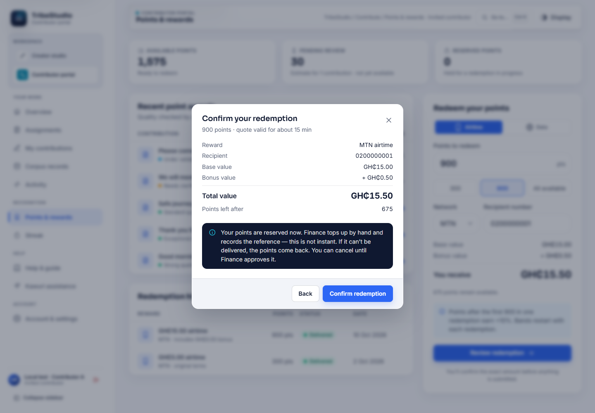
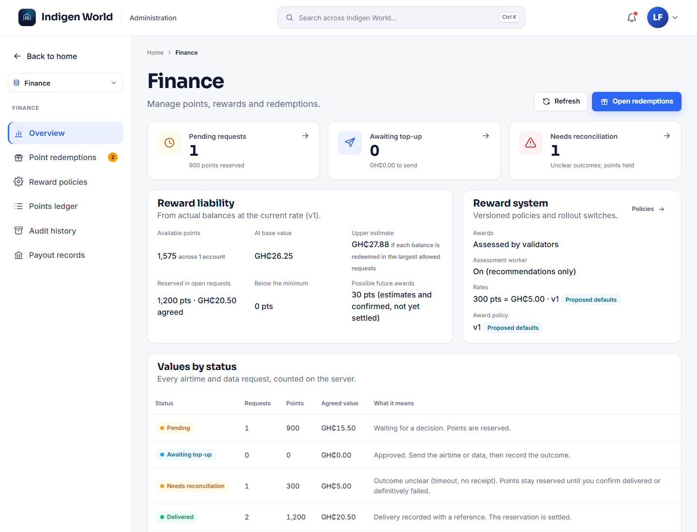
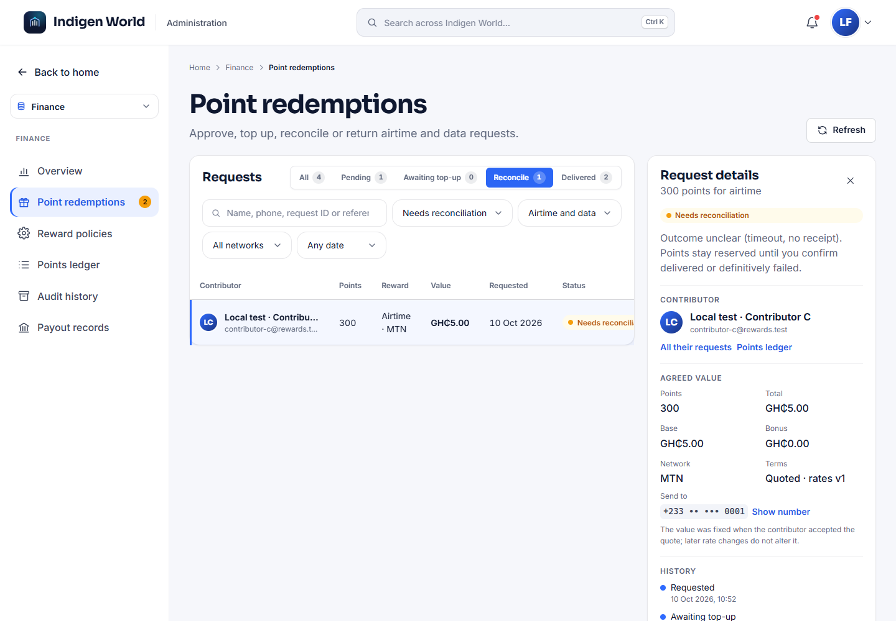
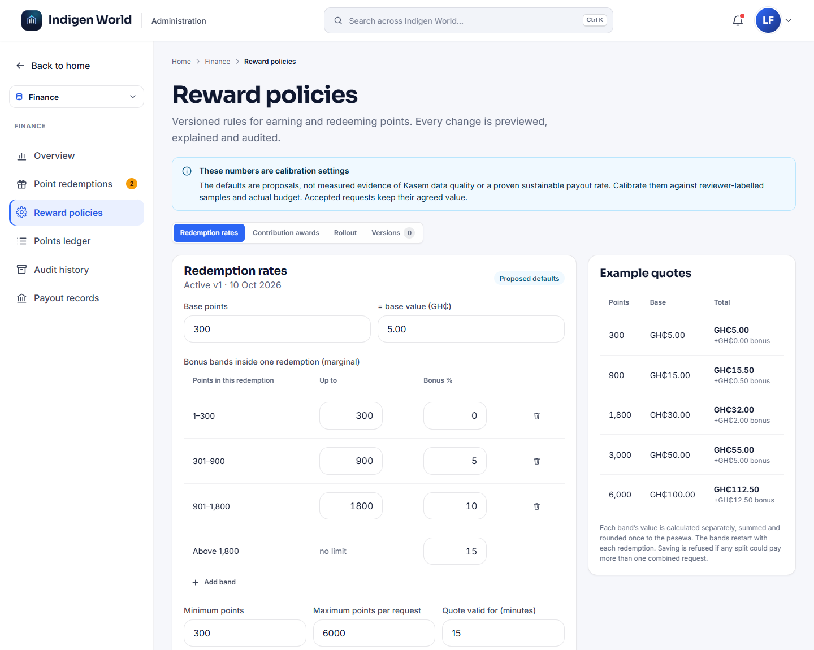

Development preview — October 10, 2026. The new points and rewards system has been built and checked on a local test copy. It has not been deployed, and the rates below are proposed settings that our Finance team will review before anything goes live. Every screenshot shows labelled test accounts; the Kasem text in them is a placeholder.
Contributor points are changing from one fixed amount for every approved submission to a clear, checked reward for useful language data — and you can now choose exactly how many points to redeem.
Until now, every approved expression earned the same 10 points, and redemptions came in one fixed size: 300 points for GH₵5 of airtime or data. That was simple, but it did not tell anyone why a contribution mattered, and it treated a carefully explained expression the same as a rushed one.
The new system rewards contributions that a fluent validator confirms as useful, high-quality training data. Each award shows its own calculation, so you can always see where your points came from.

Each kind of contribution has a starting number of points. Everyday expressions start at 20. A validator then checks the contribution on four things: whether the Kasem and its meaning are accurate, whether it is complete (for example, saying when the expression is used), whether it is usable as data, and whether its source and permissions are recorded.
Below 60 there is no automatic award. Instead, the validator asks a question or explains what would make it more useful, and you can reply from the same page. A short expression can earn the top band: length, repetition and expensive recording equipment do not add points. If you edit a contribution, it is checked again — it is not paid twice.

Validators decide, not the computer. Automatic checks help validators by spotting spelling and encoding problems, possible duplicates and missing details. Kawuri can suggest things to check, but its suggestions are labelled and cannot verify Kasem on their own. If the checks or Kawuri are unavailable, a validator simply assesses the contribution directly. Accent, dialect and equipment are never reasons to lower a score.
Validators get a new Rewards desk beside the existing review desks. It shows the original text exactly as submitted, the eligibility checks, the automatic findings with where each number came from, and a live preview of the award. A validator cannot assess their own work, and any decision that differs from the automatic recommendation needs a written reason, which is kept.
This is separate from publication. An expression can be accepted as training data without being published, and published without being accepted as training data.

You can now enter any whole number of points from 300 up to your available balance (at most 6,000 in one request) and see the value straight away. The base value stays the same as today: 300 points = GH₵5.00. Larger redemptions earn a small bonus, but only on the points in each higher band:
So 300 points are worth GH₵5.00, 900 points GH₵15.50, 1,800 points GH₵32.00 and 3,000 points GH₵55.00. The bands start again with each redemption, so combining points into one larger request gives a slightly better rate. Splitting a request never pays more.

When you choose Review redemption, our server calculates the exact amount and shows it for you to confirm. Your points are reserved at that moment. Our Finance team then sends the airtime by hand and records the reference, so delivery is not instant. If it cannot be delivered, your points come back. You can cancel a request until Finance approves it.

Points are not cash. They can be redeemed for airtime on MTN, Telecel and AT. Mobile data will appear only when Finance adds real bundles from the provider it uses. There is no cash or MoMo withdrawal.
Every change to a balance is now recorded as its own entry: awards, reserved points, delivered rewards, returned points and corrections. Nothing is edited or deleted; a correction is a new entry with a reason. Existing balances carry over exactly as they are today, and requests already in progress keep their original value.
If a top-up result is unclear, the points stay reserved until Finance confirms what happened. That way a late success can never be both paid and refunded.



We will share another update when this is live. If something about your points looks wrong at any time, use Request a review on that award or Report a problem in the portal.